肤色与妆面
异国剑士 p03 五官/脸部贴图
自带瞳孔贴图只有四种笔刷
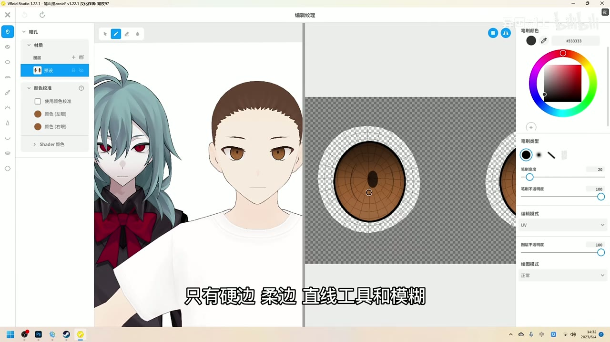
窗口是 VRoid Studio 1.22.1，文件名璃山绫。左边是已经带进场景的 OC（灰绿发、红眼），右边素体的瞳孔还是棕色预设。进瞳孔贴图后把一只眼睛放大，外圈露出 UV 网格。字幕的意思是这四种笔刷画不出 OC 的眼睛，所以后面不在 VRoid 里死画，改到外面的 SAI。
用青夜小工具把贴图链到文件夹
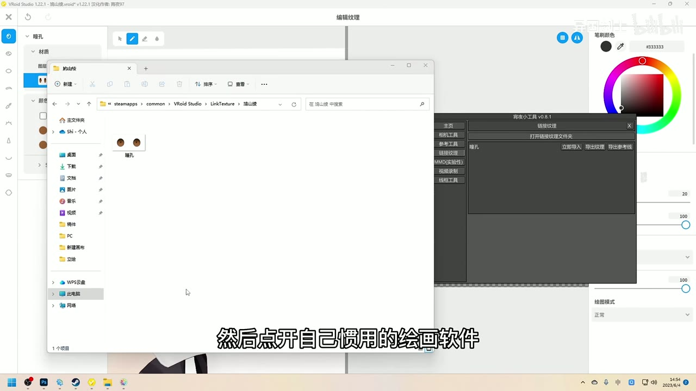
在贴图编辑器里打开青夜小工具，左侧点链接纹理。上面是打开链接纹理文件夹，每一行右侧有立即导入、导出纹理、导出参考线。瞳孔这一行链出去之后，文件夹里就是当前瞳孔贴图。后面的眼白、眉毛、眼线、鼻子、嘴、皮肤都走同一条：先选中对应材质，再打开这个窗口。不要在 VRoid 的四种笔刷里硬画。
在 SAI 里打开瞳孔，旁边放立绘吸色
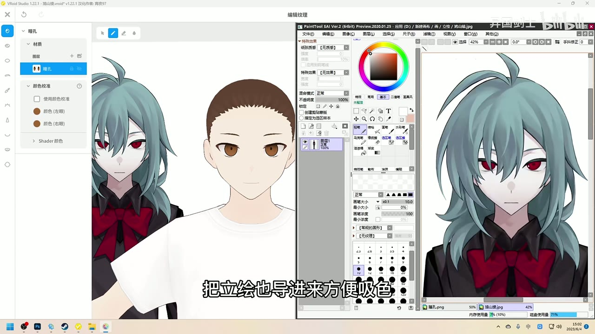
字幕说 SAI 可以直接 Ctrl+S 存成 PNG。链出去的瞳孔.png 用 SAI 打开，再把 OC 立绘璃山绫.jpg 导进来，吸色对着立绘的红眼睛，不用在 VRoid 色环上猜。白笔在棕瞳孔上划几道的时候，左边模型还是棕眼，说明那一笔还没有存成会换掉贴图的版本。
开对称尺把瞳孔画成红的
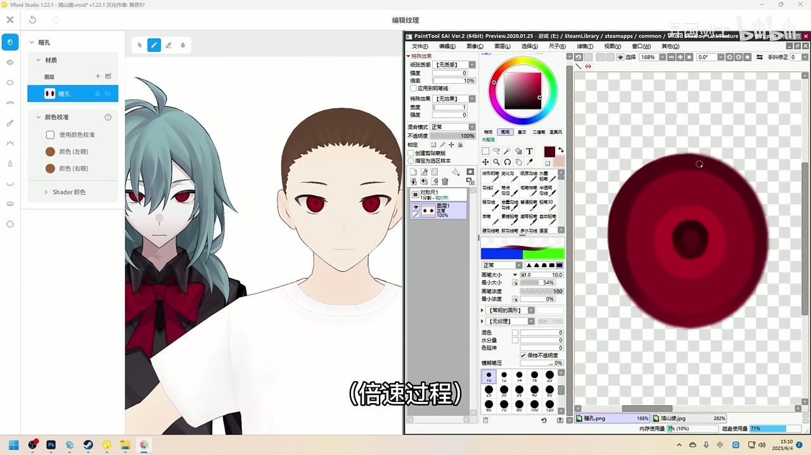
清掉试画的白笔，按立绘铺红瞳：外圈较深，往里收到暗红，中心留黑。对称尺开着，左右眼一起出现。画面标了倍速。存进链接的 PNG 之后，素体的棕眼换成红眼，圆瞳孔的形状还是原来的，变的是贴图颜色。字幕里还说过，这样比在别的软件里导出再导回方便。
把瞳孔的 Shader 颜色关掉
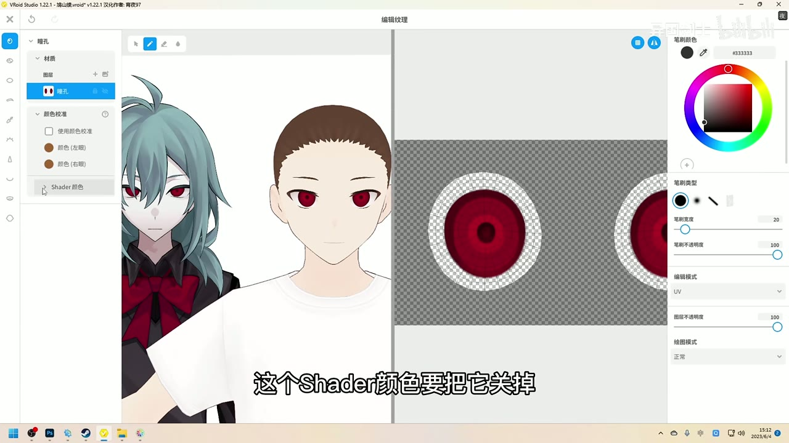
贴图已经是红的，颜色校准下面的左右眼色块却还是棕色。字幕要关掉 Shader 颜色，否则预览会再盖一层预设色，红瞳看不出来。使用颜色校准这一帧本来就没勾。关掉之后回到脸部的瞳孔，切到自定义。右侧有瞳孔尺寸、瞳孔高度和瞳孔间距，字幕说要把这些参数细调一下。画面没有停在调完的数值上，不要照某一帧的中间读数去填。
眉毛链出去画，颜色校准关掉
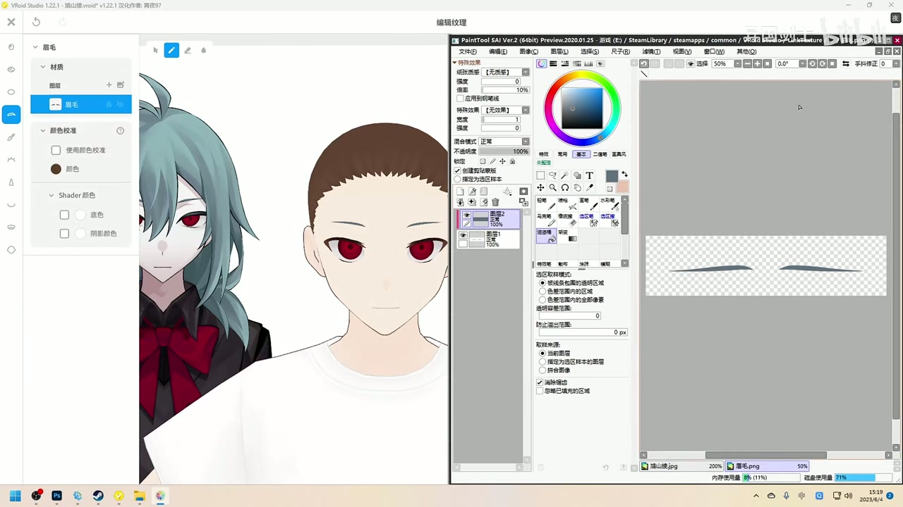
眼白也是同一套：打开链接文件夹，里面多了眼白，SAI 里对着原来的位置摸形状。字幕说可以照着原本贴图的位置摸索。眉毛先在列表里重命名，曾短暂勾上使用颜色校准，接着关掉，底色和阴影颜色也不勾，免得预设眉色盖住自己画的灰。形状是两道又细又平的眉，不要画成预设里那种粗弯眉。
眼线要开对称尺，并打开 UV 找位置
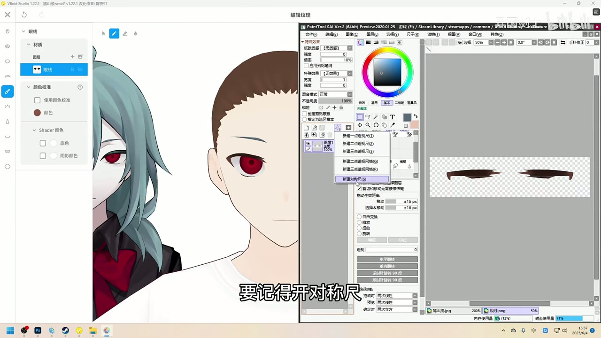
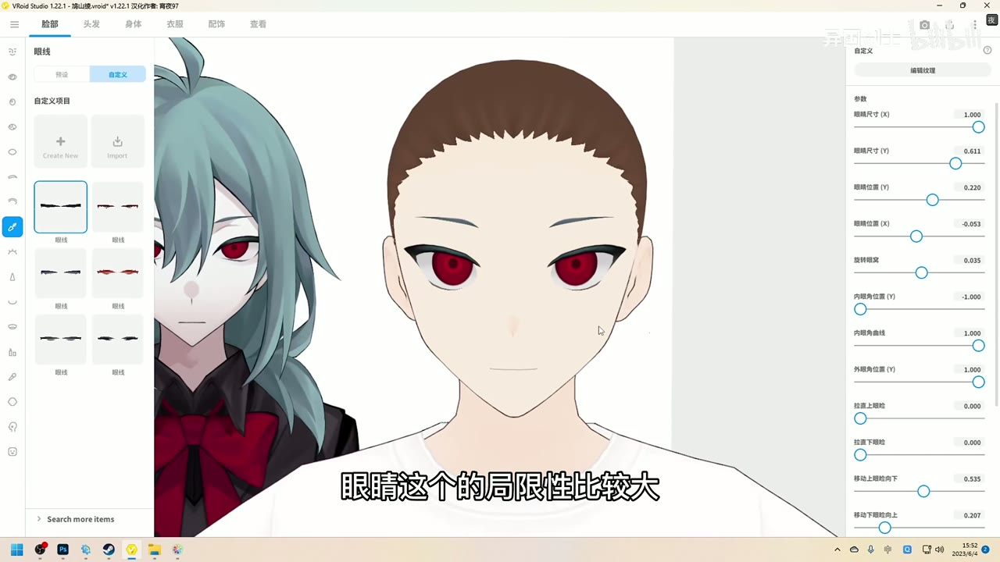
眼角（字幕说就是双眼皮那道褶）和眼线都再走一遍链接。眼线在 SAI 里从棕色改成黑，上沿比较厚、眼尾拉长。尺子菜单点新建对称尺，左右一起画。另一句字幕说可以打开 UV 参考线找位置。贴回去之后，眼睛的网格和滑杆还是原来的：贴图能换成 OC 的眼线，眼型本身不会变成立绘那种形状。字幕说局限性比较大，指的就是这个。
鼻子先导出参考线，再把立绘的鼻子贴上 UV
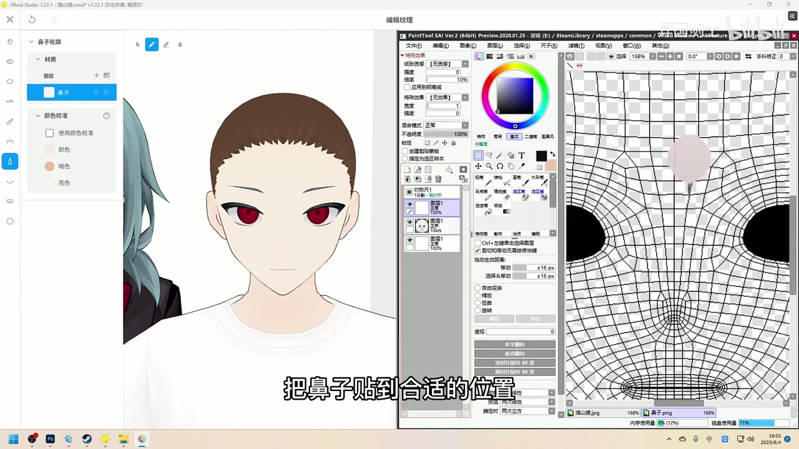
进鼻子轮廓的贴图。青夜小工具里鼻子这一行要点导出参考线，文件夹里会多出鼻子和鼻子_UV。字幕说鼻子的 UV 也放进来，再把立绘贴进去。在 SAI 里把立绘上单独的鼻子对到两个眼洞之间。画面另外切到一份分层的图，正在另存为 PNG，图层里能看到嘴、鼻子、眼睛，字幕说导出 PNG 太麻烦了，所以还是存回链接文件夹里的鼻子.png。鼻子预设页上能读到颜色 #FAEBDE、阴影颜色 #EFBAA3、高光色 #FFF7F1，这一集没有去改这三个色块。
嘴和口腔同样链接，吃惊拉开才看得到里面
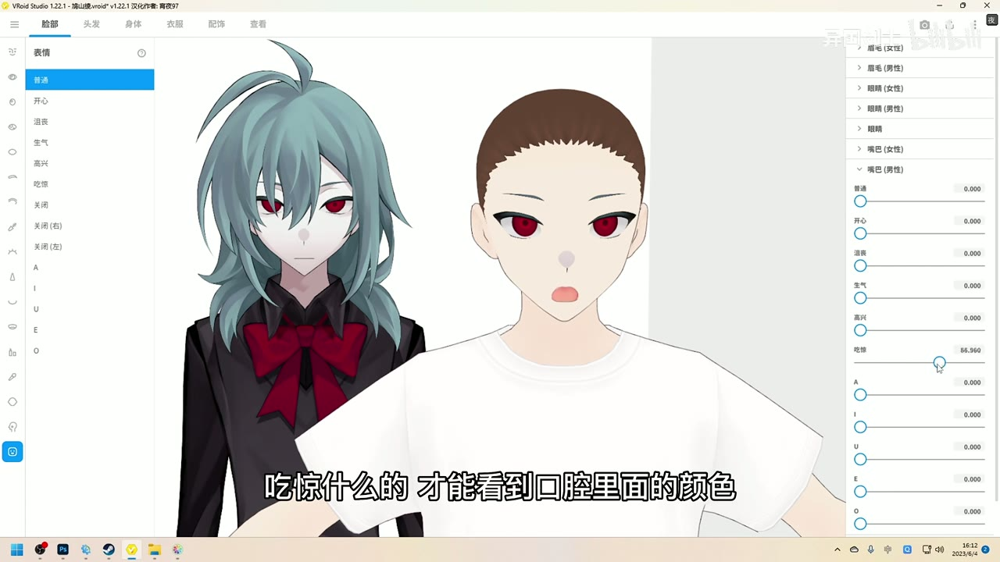
嘴的贴图字幕说用同样的步骤。做完之后进口腔的编辑纹理，青夜小工具的列表里已经有瞳孔、眼白、眉毛、眼线、鼻子、嘴，下面还有 Layer，字幕说把图层给导出来。嘴巴闭着时看不到口腔颜色，所以先把吃惊拉到 56.560，嘴张开，再看里面的颜色对不对。这一帧其他口型都还是 0。
皮肤先铺下层，再抹边、加脸侧和眼窝阴影
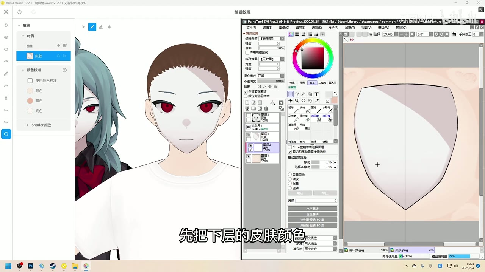
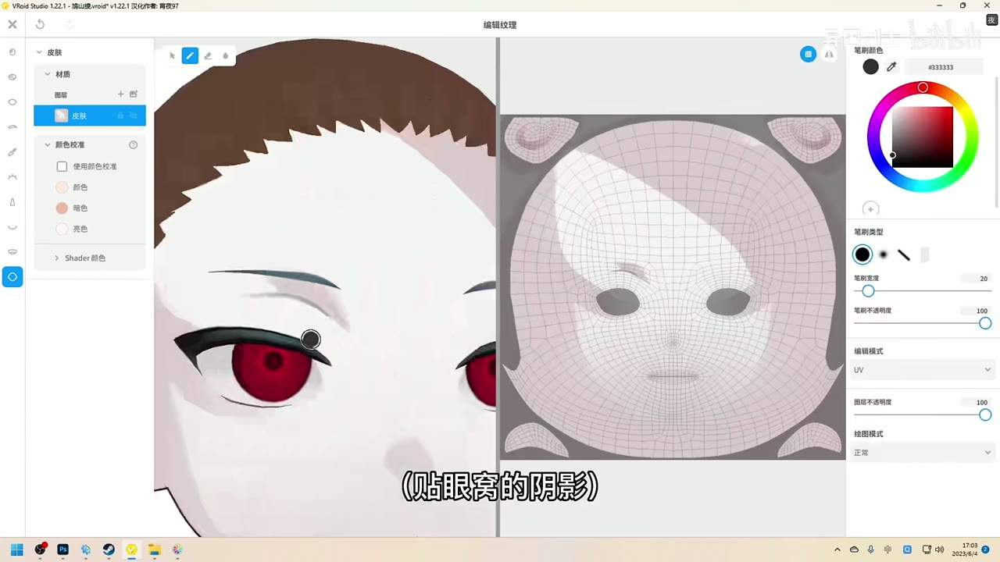
皮肤同样链出皮肤.png。先铺下层肤色，再盖上 OC 那种很白的脸。字幕接着说把脸的边缘线抹掉、扩大颜色的范围，硬边才会退出脸的轮廓。之后字幕写增加脸侧阴影和脖子衔接，UV 一侧出现一块斜的亮暗分界，模型脸颊上也是一道斜边，不是柔和的腮红。最后字幕依次是贴眼角的阴影、贴眼窝的阴影，笔停在内眼角。这一集到这里结束，头发和衣服都还是素体，没有再改。